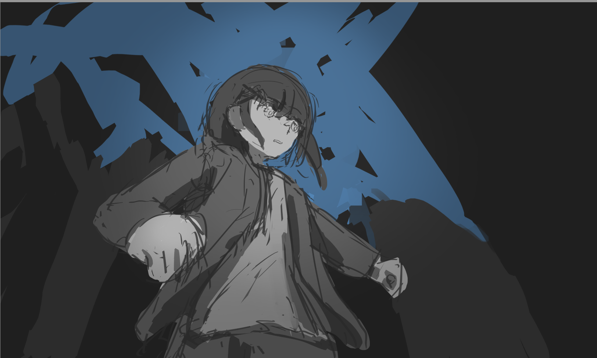
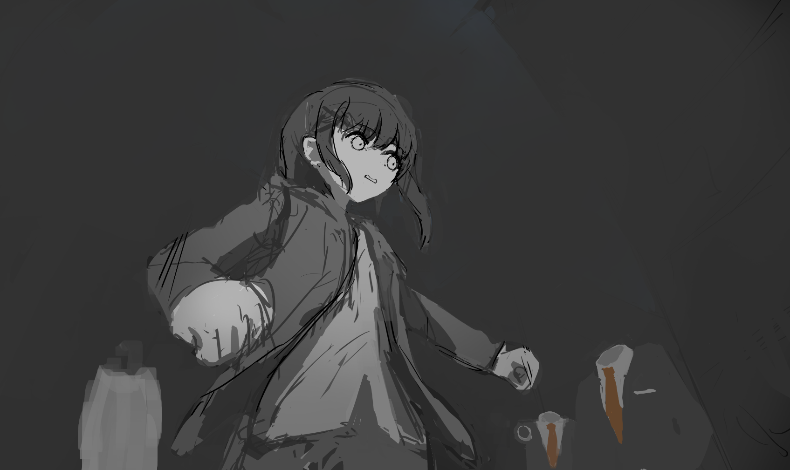
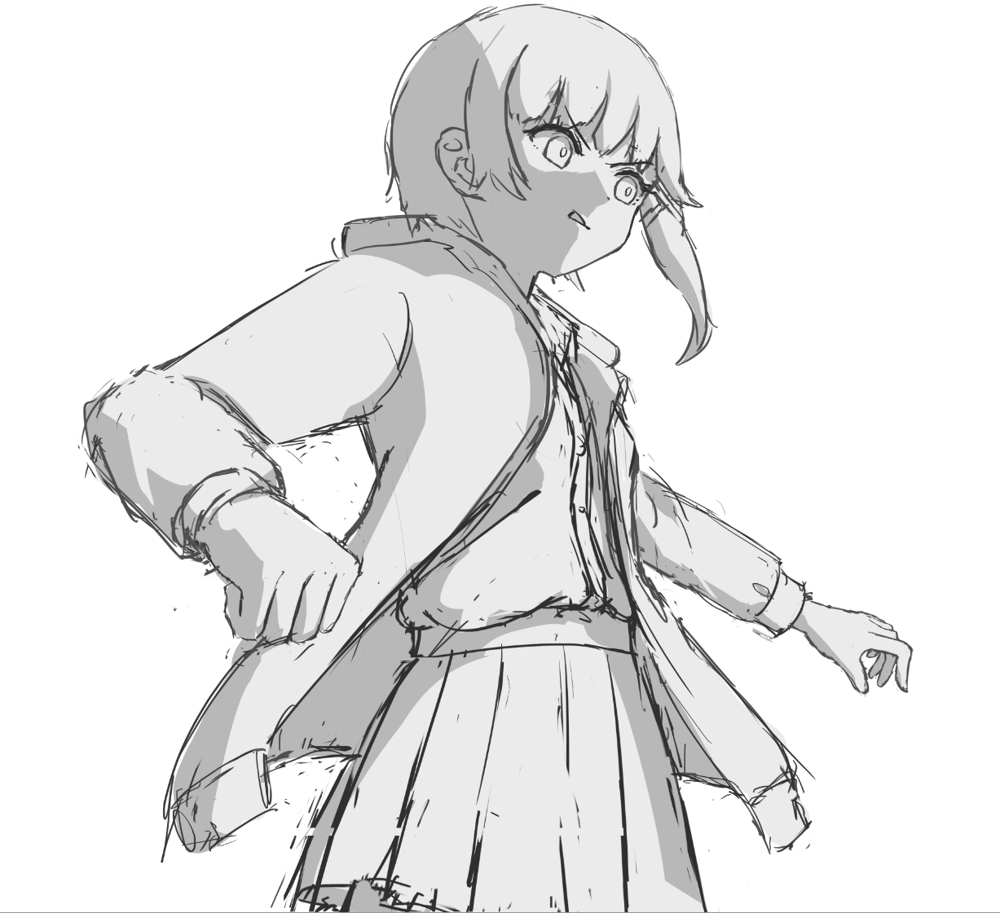
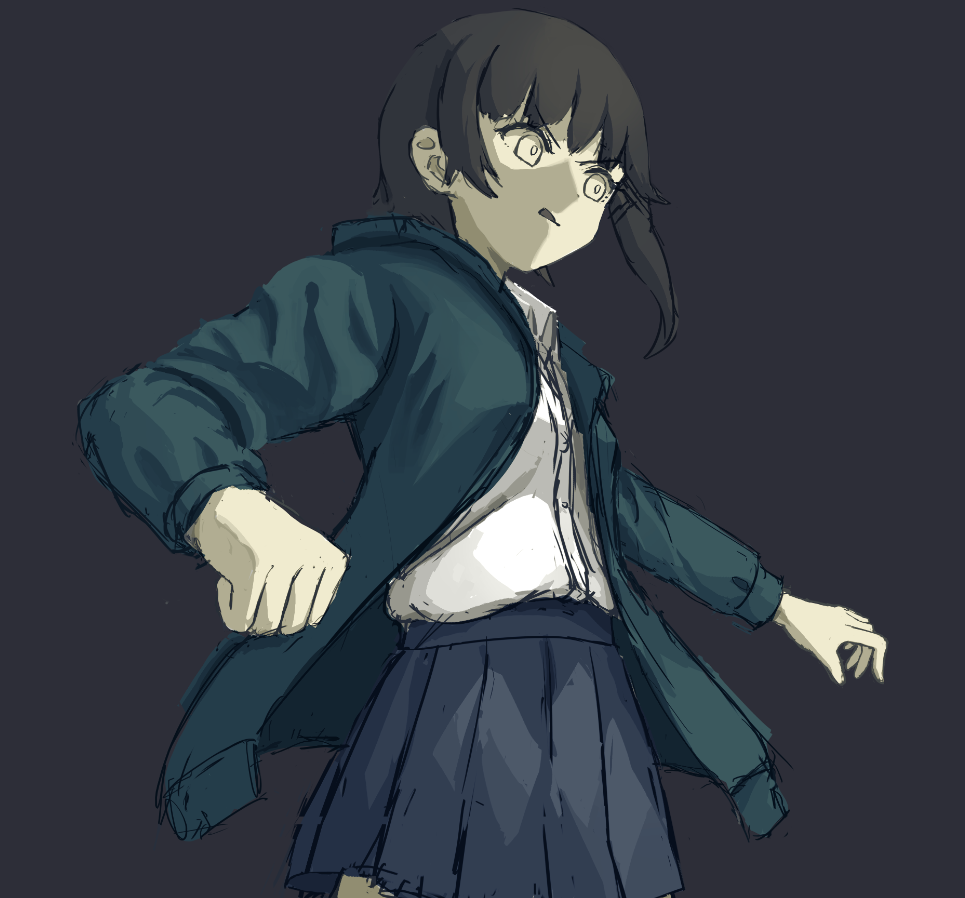
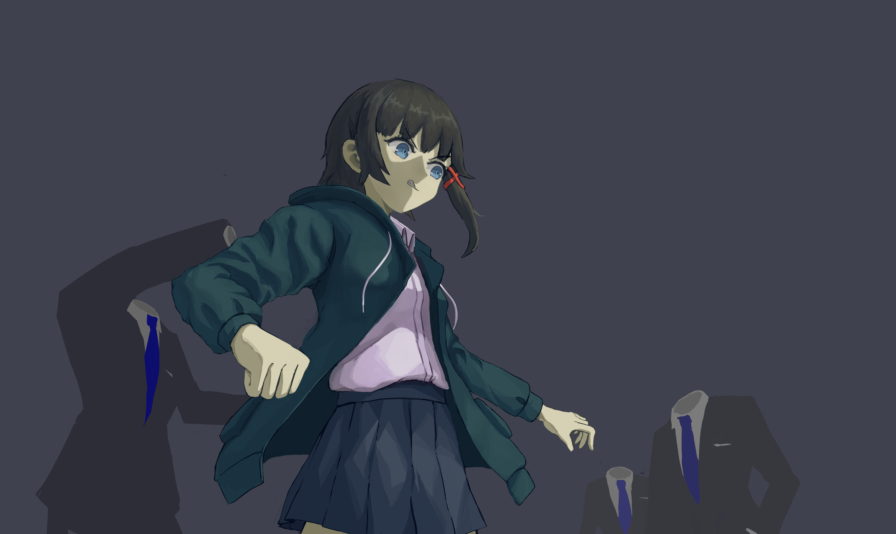

第 1 次创作
是的，这确实不是第一次，但我会把它称为第一次。
向自己强调：
- 始终把想模仿的画风的老师的作品摆在案头并作为参考
- 理解绘画是一个迭代的探索的过程，不要傻乎乎地草稿-线稿-上色这样的流程走，探索！用线条，用色块，用光影去探索！
- 保持趣味
因为我现在还没有创作经验，我相信我的意图，将是在绘制过程中逐渐明确的。所以我会选择一条最轻松的路径——我定出最大概的意图，几个关键词，我已经想好了——都市，少女，夜晚，阴郁，彷徨，然后我找符合这一意图的老师的作品，我参考他的构图，氛围去作为开始，然后逐渐去找到（该说是构造吗……）我自己想要表达的东西。
结果第一二三天都没有开头……时间分配不对啊家人们。
W0-D4
今天开了个头。我的今天的剩余时间都放在它上面。
随意探索，突然想画一个大仰视，背景有鱼眼畸变的，随便画画。奔跑，迷惘，人设选了lain。
然后画了这样的草图（天呐，谁tm会去画这样的草图）

然后我发现……这背景我真细化不来，我甚至找不到任何恰当的参考，我连要画什么，做什么意象都不清楚……我手头的所有的画师，都没有表达我想要的东西，或是像典型的知识分子一样无病呻吟，纯粹莫名其妙就是想做一个氛围，要么还是强调这个少女本身。我意识到我用了“意象”这个词，今天离创作者更进一步了？
怎么说呢，我选择小家子气一点——不画这个复杂的背景了，我去表达一个更明确直接且好画，但显得稚嫩的作品（但至少我能完成它）——在背景安排一些透明的西装人在看或追赶着少女。只画浮空的西装，不画底下的人，用简单的负形去暗示。
然后，我画成这样，草图就大概这样了。

已经有一篮子问题了——我不知道衣服褶皱怎么处理，瞳孔怎么画不知道，我该如何继续下去，不知道。
明天我要速写一下瞳孔和衣褶和手，在速写的时候注意一下（我本想写研究，但去你妈的，目前我不研究，我用笔感受）。明天就也不画色彩的作业了，专心玩我的东西。
我不得不说，即使是小家子气的版本，它仍然是超纲的，它提出了许多我目前从来没研究过的问题——眼睛，衣褶，仰视……但至少，我这几个星期以来的头部速写，没有白费，我能大胆地起头部的草图了，而且我大体知道该如何去修改。
前途一片灰暗啊？但我必须要画下去，我要把这事儿讲出来，即使磕磕绊绊，即使处处都不会圆满。
我不求完美，我只求能收尾而非烂尾。
W0-D5
我注意到一个明确的问题——如果我线稿和颜色在同一个图层里，我后续要改形状就会非常蛋疼，而改形状？对我来说会是非常常见的事情，因为我现在经验不足……
而这让我不能直接用我之前搞的草图了，那个草图只能成为完全的参考信息，我没法以它继续下去了。行吧。
W1 D1
Let’s rush。这星期要真刀真枪地干了。
这张画风我决定了，我要学shion老师的风格，但在线稿之后我要存一个盘，我看我能不能用多个风格去做，或许是Sentter老师的？不过那个我就不在案头放参考了。
这第一天我在干什么，我究竟在干什么？现在画4个番茄钟，然后健身，吃晚饭。
我要思考一下——画面太寡淡了目前，在她的T恤上，我要加个logo，加什么？我先看看shion老师怎么做的，他……呃他没做什么。
老实说我没有点子……我不知道用什么logo去强调什么东西，所以我干脆不用T恤了，用衬衫+百褶裙，这个稍微简单一些。
那外套呢？外套又如何？
妈的，得了吧，从趣味出发！反复思考这个不如先把作品怼出来先！再说，并非每一句话都有伏笔都要暗示什么东西，不是吗？
总之先大概是这个感觉，脸部做一个伦勃朗光，然后整体打一个正面光。草稿就这样了。
这后续肯定会出问题——脸部打伦勃朗光，shion老师从未这么做过，他的画风虽然整个是很厚涂的，但他的脸总是画的很平或者很圆润，我这个脸是更风格化的……绝对称不上圆润，但继续看吧。

我……我发现这整个画面究竟是什么调子我都说不清楚，搞毛啊？
总之……我先决定好下几步，做完了再返过来做笔记：
- 找夹克，裙子的参考，去细化二分的形状
- 这是最重要的一步——Krenz说，二分是做明暗交界线，而我要说，二分，本质上是通过明暗交界线去做形体，而且这里主要做的，是我脑子里的形体而非画面上的，去强化我脑子里的形体，去帮助后续的绘制才是二分的根本目的。并非只有二分才能塑造形体，如环绕线，结构素描也是塑造形体的工具，但二分的优越之处在于——它最有效最明确，同时也能直接用于后续的绘制
- 做固有色（和闭塞，是否这个阶段做倒值得疑问）
- 做一个备份（！）因为我要整花活儿
- 合并草稿和颜色，直接开始后续的塑造
我注意到做了二分后我再次注意到头部的平衡感有问题，调整了整个头部，很神奇啊。
等等，直接用二分做衣褶我似乎缺少经验……我先用线条探索探索……还是说我直接用塑造去探索？
最后还是回到二分，衣褶是个大BOSS啊……
好吧，路径更新（这里主要指的是衣服，头发和脸另外细化）：
- 细化二分（直到我改无可改）
- 合并线稿，做暗中暗，亮中暗（这一步其实仍旧是在探索形体）
- 再做固有色，我要先能让我明确地理解结构先
他妈的，我之前跟自己反复强调说创作我要有个参考的画师，结果结果结果我的题材，我的concept太独特我又太稚嫩，我找不到合适的参考啊……
W1 D2
当前已经有无数个第一次了……第一次用形状探索褶皱，第一次用硬笔用形状去做文章而非（像我以为的厚涂那样）乱糊。
总之……大概是这个感觉，我不满意，但我觉得我可以前进了。我心里在报警说我褶皱还没处理好，但我决定先处理其他部分，因为我得优先关注整体的好。

合并前景全部图层，开始细化，这是类似厚涂的细化法……很神经病，同时处理细节和修改形状，会很困难。
头发是个坑……我本想按厚涂的方式做，但发现这个简直是另一个领域，我选择用硬笔，（在方法论上）用形状去体现质感。我给自己提出的重点是——先做大的，先做影响明显的，再做小的，影响不明显的；先在差异大的地方做文章（如明暗交界线，高光边缘），再在差异小的地方做文章。在实操上，我给画面开个小窗显示整体，然后我绘制的时候也不放太大，同时频繁拉远看。
好吧，我得承认，我不止是画的不满意，我还会把自己画的整笑出来……
又推进了几个小时，感觉还是很有挫败感的——我其实是想表达一些东西（内容），但我发现我被拘束在形式里无法自拔，我感觉我做的大部分的事情，对我想表达的东西其实没啥意义，它们只是让画面去成立，但我觉得这部分并没有什么乐趣……或许我确实适合去画漫画？
不过我这想法应该只是这个瞬间的我的想法，玩形式我之前也挺热衷的，但我现在是没什么根据地去做细化，像无头苍蝇一样到处撞把热情撞没了……这就像没有任何目标去玩MC，开的还是超平坦模式……
当然这也是我自己的锅，我本来对自己说创作我要以特定的画师的插画作为范本来着，但结果我这第一次创作没有这么干，结果我连我要达到怎样的效果都不知晓，现在再找参考也晚了（再说我确实找不到合适的参考……），继续推进下去吧，向自己强调——
目标是做完而非做好，画的烂是必定的，但我至少要保持整个画面的视觉的一致性。
W1 D3
今天观察了一下我喜欢的画师，我发现其中偏向厚涂的，脸部通常（90%以上）都是大片背光，只有最偏向平涂的那些画师正面向光的才多（不过这种的就没什么光源的方向可言了，都是漫反射的感觉，靠闭塞取胜）。我感觉可能是……背后来光的话会让画面更好看，以及避免正脸产生太强烈的立体感。
W1 D4
这两天又……我怀疑我的emo不会是因为创作受挫吧？但我发现我确实还在推进，还能推进。
他妈的……我明知我在把画面弄脏，但我不知道我该怎么做了，因为我根本不知道我要什么结果……所以，下一幅创作我必须要避免这个。下一幅创作的草图，我在车上草图画出来的，我要按coldcat老师的风格去画。
W1 D5
继续继续！
回过头来看我的绘画顺序，在草图之后，我逐块地去细化……我觉得我这种细化方法很有问题——我不是整体去细化的，我是一块一块去细化的，画完左手画右手，画完衬衫画外套，这个顺序我不知道它究竟是否是正常的，对当前的我是否是必要的，但我对此很警惕，这个在后续的创作中我要继续注意。
以及，这次我直接从草图开始做塑造，我很喜欢这样——这带来了最大的灵活性（再说我本身胸中就没有丘壑，我是在画的过程中逐渐发现我最终想要的东西），但这也是因为我这幅偏向厚涂，这时候线条和形状都是我用来探索的工具，所以我不必拘泥于先线条再上色的顺序；我如果要去画平涂的话，我估计不能这样，画完草图后我可能得乖乖地勾线、上色……因为平涂要求线条清晰，有足够信息量，而我如果渐进地做线条的话会让画面很乱……但这同样只是猜想，在后续的创作中注意。

and……that’s it！12小时，终于让我画完了。我不满意，但我要给自己一朵小红花儿。
本博客所有文章除特别声明外，均采用 CC BY-NC-SA 4.0 协议 ，转载请注明出处！